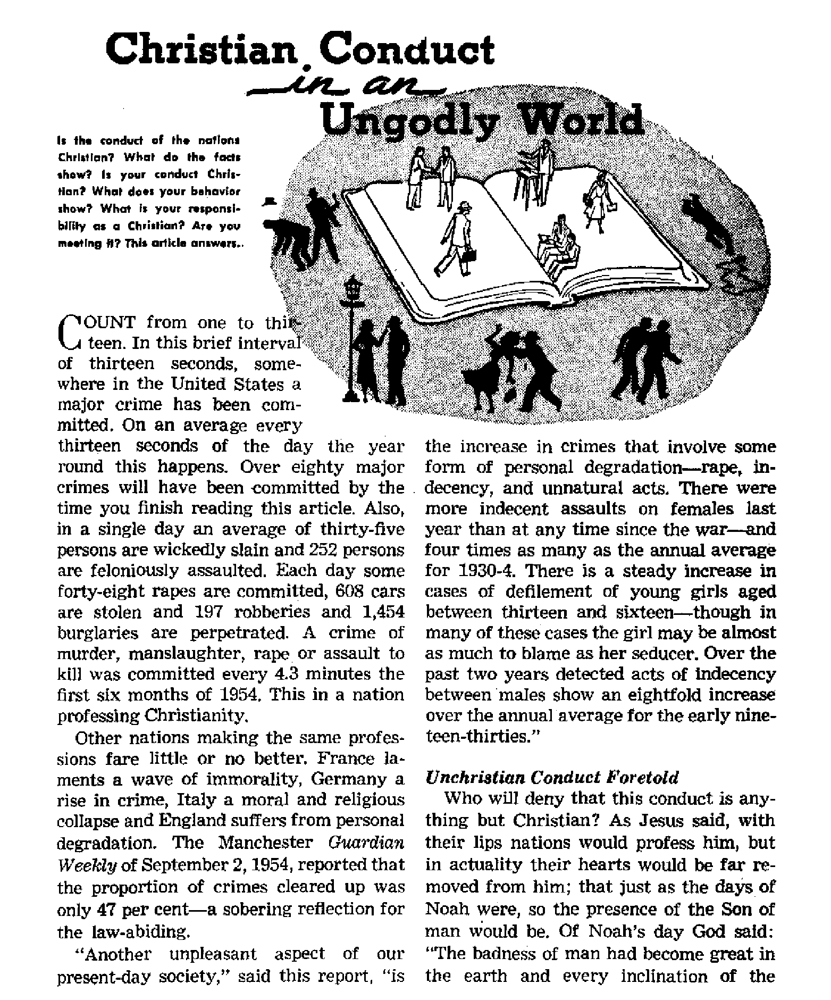

What is your responsibility? Are you meeting it?
Beginning a series of visits to European cities
Did Christ institute it?
The solving of a heinous crime
APRIL 22, 1955 semimonthly
THE MISSION OF THIS JOURNAL
New* fcurccs that ar* able to k**p you awake to i* vital Imum of our -ttrne* mutt b* unfettered by cen*orehtp and »Zfi»h fntereete. “Awake!” ha* no fetters. It reoognize* facts, faces facts, 1* fr*» to publish facts. It is not bound by political ambitions or obligation*; It is unhampered by advertisers whose toes must nut be trodden on; it is unprejudiced by traditional creeds. This journal keeps itself free that it may speak freely to you. But it does not abuse its freedom. It maintains integrity io truth.
“Awake 1” uses the regular new* channels, but is hot dependent on them. Its own correspondents are on all continents, in score# of nations. From the four corner* of the earth their uncensored, on-the-scene* reports come to you through these columns. This journal’s viewpoint is not narrow, but is international. It is read in many nations, in many languages, by persons of all ages. Through Its pages many fields of knowledge pass in review—government, commerce, religion, history, geography, science, Social conditions, natural wonders—why, its coverage is as broad as the earth and a* high as the heavens.
“Awake 1” pledges itself to righteous principles, to exposing hidden foes and subtle dangers, to championing freedom for all, to comforting mourners and strengthening those disheartened by the failure* of a delinquent world, reflecting sure hope for the establishment of a righteous New World.
Get acquainted with “Awake!” Keep awake by reading “Awake!”
PrBr.t»HTtD S#MIWOJnTTt,T Bt WATCHTOWER BIBLE AND TRACT SOCIETY, INC.
117 Alam# Street Brooklyn 1, N. Y., U.S.A.
N. H. Kuo**, PretWent <J*.tHr Soil**,
Printing this iMiit: 1,323,000
L-utMHt l> Irttefc th It imvIm Is mikkU: SfElRCTUli# —ArnUiTM, Ifr'KlW, trench
'pHTtb.1 Hoi’anttWi. Ji’irwtttnr. Spwhl;, Mwihb DmWa, FtrfiiJnr, CkrMxxiw
Dflhvi Ytb'Lj aubfcrtpUan
RlWta, U.S.* Ill Adki*l 8! , IrrtMiljT 1. h Y. |l AitfraHa. 11 litmwd fid., ftrvAfrK. X 8 ?»
Cui4«. Av? . ToM/ito 6, Ortkrfo 81
En*CM»B. 31 i’r***i» Tcti« W 1 7a
(Mtli AfrlM, Priwu St*. P 0.
Trauma) T»
RifetH M aM0><! C1IM EitUT at IrwUyn, N. Y
F/v< copy
frmnhtMiH ihmK be mm rfee in your non fry in hmei pliant vitb je[ulatM"i to
ufr dr J T^ty N SpnltunrM am *c<r»cwJ ar
jirjaklyn fro* matM rhar* no i« 'aeairJ. by iXfriiatioi*! ikjtmj cclcr wly.
ratM la aiff rent twatrtat m hm awtd la tom Mfrrwwy, k*tlaa tt reatirttlblMltl
i* sev nt lw.it two U ’te* >f»rt aubatrtpdcc n-pL"«f Ckanfa *t aMrm «hrt> writ W «»r c*k» ruy b» txpwctad effceUwa wltbla cwm ■waUi t>r > yoir »W u itJ ai imw iMhm
Art Marrti 8* IBM) tn U. B. A
CONTENTS
Christian Conduct in an Ungodly World 5
Panama's President Brutally Assassinated 9
The Festival of Corpus Christi
Your Limbs or Cigarettes—Which
Elephants Curb Hero-Worshipers 23
Drastic “Step Signal” for
A Penetrating Look at the Religious
“Your Word is 'Truth”
A Religion Where Money Is No Object 25 Graduation of Gilead’s 24th Class
MOST people today fear their neighbor more than they fear God. Neighbor fear, a product of the Dark Ages, has grown into a hideous colossus and has become one of the most enslaving and truthsuppressing tyrants in the world. It can be more compelling than laws. No wonder it is the Communists’ chief tool! Declared former Soviet spy Nikolai E. Khokhlov: “The most important weapon of the Soviet Government against the citizens is the mistrust by one citizen of another.” (U.S. News & World Report, January 21, 1955) That comes as no surprise, but this might: neighbor fear, has spread to all parts of the world. Though a victim of this fear dwells in the most democratic of nations, he has lost his freedom. Warned Chief Justice Earl Warren of the United States Supreme Court: “If a man is free only to be what his neighbor wishes, he is not truly free.”
The mind rebels at the suggestion that one fears his neighbor. This is not strange, for it is an admission of bondage, and no one wants to be a slave to his neighbor. Let us be honest with ourselves and ask the question, What are signs of neighbor fear? There are at least three main signs: (1) Wondering what one’s neighbor will think; (2) falling into a state of mental conformity, and (3) fearing knowledge.
Now the first sign. Persons seized by neighbor fear allow their decisions to be influenced by a power other than sound reasoning. What is this power? It is a roadblock in the mind that checks all ideas and decisions with this question: What will my neighbors think ? Becoming subservient to a perpetual wondering what the neighbors will think is coming under the power of a dictator that kills the human spirit and makes one a robot.
This brings us to the second sign of neighbor fear: conformity. Those who fear their neighbors believe that they should accept any popular credence or creed whatever the cost. And the cost is always high. Sound judgment and reasoning suffocate and die. Thinking is difficult, so why think? It is much easier to do and believe what “they say.” True, not all . neighbor fearers allow their minds to atrophy completely. Some may even hold ideas of their own based on truth and righteousness. But when neighbor fear is present, it dictates that one hold secret or disguise his real opinions.
Conformity triumphs. It always threatens to brand one with the stigma of disloyalty if he thinks. Declared a noted justice, Judge Learned Hand: “I believe that the community is already in process of dissolution where each man begins to eye his neighbor as a possible enemy, where nonconformity with the accepted creed, political as well as religious, is a mark of disaffection [disloyalty].” Is your community truly free or is it "in process of dissolution"?
The third sign of neighbor fear is being unduly suspicions of ideas, yes, being fearful of knowledge itself. Fear of knowledge fosters ignorance, entrenches superstition, discourages advancement, quenches enlightenment and leads to narrow-mindedness. So this morbid fear or suspicion of ideas makes one close his mind even before he has opened it. This is ruinous.
But why fear knowledge? Because, though knowledge can destroy error, it brings about changes. What is feared is the undesirable side effect of the change. For example, a change might mean a loss of prestige, an upset in a profitable status quo or hostility in a family group. So selfishness prompts a fear of knowledge.
Recognizing the extreme peril of fearing knowledge, Dag Hammarskjold, secretarygeneral of the United Nations, gave a thought-provoking talk to scholars at the Charter Day dinner of Columbia University. Among the honored guests was Queen Mother Elizabeth of Great Britain. To this distinguished group the high U.N. official said (as reported in the New York Times of October 31, 1954): “We all of us are quick to recognize in principle the value of knowledge. Yet we may hesitate to do what is necessary in order to open wider access to knowledge for others or to deepen our own knowledge. Too often we even share in reactions that can be explained only by a fear of knowledge.... If we fear knowledge and act under the ban of such fear, is it not often because we fear change?
“We have seen among us the resurrection of practices and attitudes belonging to, indeed justifying the name of the Dark Ages,” continued the U.N. official. "A fear of knowledge, inspired by the wish to safeguard established interests, may for a time block an unavoidable development.
But, in so doing, it may create situations where change finally comes into being with the violence of an explosion." Then the U.N. secretary-general drove home this point: “No policy which cannot stand the test of full knowledge and free criticism will ever be safely based in the loyalty of the peoples.”
Do you fear to subject your own policy to “full knowledge and free criticism”? Neighbor fearers usually do. They have made themselves pawns in the hands of their neighbors. Interestingly, Judge Learned Hand once said: “I often wonder whether we do not rest our hopes [for freedom] too much upon constitutions, -■ upon laws and upon courts. These are false hopes. Liberty lies in the hearts of men and women. When it dies there, no constitution, no law, no court can even do much to help it.”
Do you fear your neighbor? Really, what a neighbor thinks matters little. Can he give you life? He cannot give you one day’s life. Only God can give life. So what counts is not what a neighbor thinks but what God thinks. And he will not think much of us if we fear neighbors. His own Word warns at Proverbs 29:25 (Knox Catholic translation): “Fear of man’s judgments will bring thee quickly to ruin.” The American Standard Version -says: “The fear of man bringeth a snare; but whoso putteth his trust in Jehovah shall be safe.’’
So dispel neighbor fear by fearing Jehovah God above all. As for your neighbor, Christ Jesus did not say to fear him. He said; “You must love your neighbor as yourself.” (Matthew 22:39, New World Trans.) Show your love by helping your neighbor conquer neighbor fear. Accept knowledge. Test it with reason and with God’s Word. Fight mind-enslaving conformity. Trust in Jehovah. Do this and you will never be among those miserable ones who fear their neighbor more than God.
APRIL J?£, 1955
5
thoughts of his heart was only bad all the time.” The apostle Paul foretold this wave of unchristian conduct and said that it was a sign of the last days. “But know this,” said Paul, "that in the last days critical times hard to deal with will be here. For men will be lovers of themselves, lovers of money, self-assuming, haughty, blasphemers, disobedient to parents, without gratitude, with no loving-kindness, having no natural affection, not open to any agreement, slanderers, without self-control. fierce, without love of goodness, betrayers, headstrong, puffed up with self-esteem, lovers of pleasures rather than lovers of God, having a form of godly devotion but proving false to its power.” He closes with this warning: "From these turn away.” —Genesis 6:5; 2 Timothy 3:1-5; Matthew 24:37-39, New World Trans.
Paul further explains why crimes that involve forms of personal degradation, such as rape, indecency and unnatural acts, have increased. Paul charges that materialism, spiritual irresponsibility and mankind’s lack of faith in God are the primary causes. The apostle argues: ‘‘Although [mankind | knew God, they did not glorify him as (Sod nor did they thank him, but they became empty-headed in their reasonings and their unintelligent heart became darkened. Although asserting they were wise, they became foolish and turned the glory of the incorruptible God into something like the image ot corruptible man and of birds and fourfooted creatures and creeping things. . . . That is why God gave them up to disgraceful sexual appetites, for both their females changed the natural use of themselves into one contrary to nature, and likewise even the males left the natural use of the female and became violently inflamed in their lust toward one another, males with males, working what is obscene and receiving in themselves the full recompense which was due for their error. And just as they did not ’approve of holding God in accurate knowledge, God gave them up to a disapproved mental state, to do the things not fitting.” —Romans 1:17-32, New World Trans.
Who is responsible for these despotic times? Satan, the god of this world, is. He is out to rule or ruin. The apostle John identifies tills foe for us, paying: "Woe for the earth and for the sea, because the Devil has come down to you. having great anger, knowing he has a short period of time.” (Revelation 12:12, New World Trans.) His pattern of action is clear in the earth—deception, distortion, corruption, destruction.
This generation’s religions become more perfunctory, conventional, worldly. Godliness has become okl-fashioned. Materialism is modern. Life, in its highest and lowest reaches, is cheap, sordid, vulgar. It says it wants peace and unity, but it harbors ill-will and hate. It criticizes stubbornness and faults in others, but ignores them in itself and its children. It says we need divine help, but it forgets that it is the pure in heart that will see God. It fails to see that it is not those who talk but those who listen that receive guidance; that a key to a new home is a new personality; that Christianity in deed could supply this need.
Early Christian Conduct
The course of first-century Christians was not marked out by Caesar, but by Christ. It was not an effort at "character development.” Rather it was a course that required accurate knowledge of God’s basic principles and righteous requirements, coupled with an honest desire and earnest effort to live by them, with a sincere love of God and neighbor. This course recognized the need for the operation of God’s active force in one’s life, since many righteous qualities are themselves actually fruits of the spirit. It meant a completely
changed thinking process from that of the former course in Satan’s system of things, a development of a new life pattern by daily strengthening of proper habits, leanings and mental attitude.
In no other way was the devout Christian more clearly distinguished from this degenerate world than in his concentration of interest in the new world of God’s promise. This old world meant absolutely nothing to him. He expected to see it end in the wrath of God. Peter himself emphasized this fact, saying: “Since all these things are thus to be dissolved, what sort of persons ought you to be in holy acts of conduct and deeds of godly devotion, awaiting and keeping close in mind the presence of the day of Jehovah, . . . But there are new heavens and a new earth that we are awaiting according to his promise, and in these righteousness is to dwell.”—2 Peter 3:11-13, New World Trans.
This new world Jesus ’ proclaimed and made alive in the hearts of men of sublime sincerity. These men took seriously what Jesus said and strove to live his words faithfully. They sought no reservations and recognized no compromises in his message. Jesus brought them a way of life that concerned their eternal welfare. His teachings were powerful and alive and exacted complete obedience. Those that followed him willingly dedicated their lives in an attempt to render this obedience.
As Christians they bowed to only one God, the God of the Bible, Jehovah. They pointed out that even kings as well as subjects must bow before him. If any conflict arose between a commandment of God and that of Caesar, there existed no doubt or difficulty in the Christian mind as to how to solve it. God always came first If Caesar’s command was inconsistent with God’s, it was thereby of no effect. It was as simple as that to those who believed.
Since their interests were fundamentally spiritual, their conduct was one of separateness from this ungodly world and its prevailing activities. This was not their world nor their way of life. They were good citizens, however, obeying the laws of the state that did not conflict with God's law, and keeping the peace. As members of the community, they were quiet, moral and loyal. The simplicity and purity of early Christian life were so remarkable, as set over against the corrupt manners of the time, as not to be believed, and therefore inevitably to be suspected as a cloak for hidden enormities of conduct. It was their conviction, however, in the grand hope of the Kingdom, the new world, that enabled them to accomplish this transformation.
Christian Conduct Today
It is precisely this same hope that enables twentieth-century Christians to undergo this same transformation. A Christian today lives for the new world. This old world means absolutely nothing to him. In fact, he expects to see it go down in the battle of Armageddon. Therefore, he has taken the apostle’s counsel to heart, which says: “And quit being fashioned after this system of things, but be transformed by making your mind over, that you may prove to yourselves the good and acceptable and complete will of God.” The active force of God is needed to effect a change in his thinking and conduct. He sincerely wants to change his old-world habits. “Wherewithal shall a young man cleanse his way? by taking heed thereto according to thy word.” The Bible, God’s written Word, is able to search out his inmost thoughts and direct his course, if he will let it. Failure to renew his mind leads into the corrupt mental state of this old world, which can only mean destruction.—Romans 12:2, New World Trans.; Psalm 119:9.
Becoming such a true Christian and leading a Christian life actually mean be-7
coming a new personality. Before one can successfully do this, he must get truth into his mind and heart and make it the motivating force in his life. To this end accurate knowledge of God’s requirements is necessary. These requirements of God extend into daily living. Everyday affairs of life should be governed by his mental attitude toward Christ. As Peter wrote: “Hence brace up your minds for activity, keep completely balanced and set your hope upon the undeserved kindness that is to be. brought to you at the revelation of Jesus Christ. As obedient children, quit being fashioned according to the desires you formerly had in your ignorance, but, in accord with the holy one who called you, do you also become holy yourselves in all your conduct.”—1 Peter 1:13-15, New World Trans.
Gossip and backbiting, thoughtless, tactless and unkind remarks must be avoided by the Christian. “A whisperer separateth chief friends.” He will steer clear of meddling in others’ personal affairs. He learns that disagreements and strife must be forgotten, that maliciously criticizing others’ shortcomings is very improper; that personal family dissensions and contentiousness should be overcome; that a balanced viewpoint must be maintained through proper moderation in eating and drinking, and that whether in the congregation or away from the congregation his association must always abound with love.—Proverbs 16:28.
The Christian’s own conscience, trained in God’s Word, determines his choice as to work and other such activities. When at work he is counseled not to cheat his employer but to give a full day’s work. He must remain a Christian when outside or inside the congregation. Godly conduct outside the organization is imperative. “Let as many as are slaves under a yoke keep on considering their owners worthy of full honor, that the name of God and the teaching may never be spoken of injuriously.”—1 Timothy 6:1, New World Trans.
Maintaining Proper Conduct
Christian witnesses of Jehovah must always remember that their conduct is an example to the old world of New World living. This conduct either reflects or detracts from the glory of God. Under no circumstance will a Christian compromise with uncleanness to appear a “good fellow.”
To be able to live up to the responsibility that rests upon a Christian, one must continually fill his mind with right matters, proper thoughts. This requires constant self-discipline in even the smallest matters of daily living. “Pursue peace with all people, and the sanctification without which no man will see the Lord, carefully watching that no one may be deprived of the undeserved kindness of God; that no poisonous root may spring up and cause trouble and many be defiled by it; that there may be no fornicator nor anyone not appreciating sacred things, like Esau, who in exchange for one meal gave away his rights as firstborn.”—Hebrews 12:5, 6, 14-16, New World Trans.
Maintaining a godly conduct in an ungodly world is not easy. It is hard work, in fact. But our load can be made lighter by applying ourselves, by continued personal study of God’s Word, by regularly attending congregational meetings. This is essential if we are to receive full direction of the holy spirit Paul admonishes us to assemble together that we may be refreshed and strengthened. To associate in a social way with those who do not hold to such high principles is very dangerous at this time of the end. “Do not be misled. Bad associations spoil useful habits.” So, associate with your Christian brothers; help, edify one another in love.—1 Corinthians 15:33, New World Trans.
Bear in mind Paul’s words: “This, therefore, I say and bear witness to in the Lord, that you no longer go on walking just as the nations also walk . . . but that you should be made new in the force actuating your mind, and should put on the hew personality which was created according to God’s will in true righteousness and loving-kindness. So keep strict watch that how you walk is not as unwise but as wise persons, buying out the opportune time for yourselves, because the days are wicked.”—Ephesians 4:17-24; 5:15, 16, New World Trans.
it
By "Awoke!” correspondent in Panama
ONE bullet did it! Two hours after found its mark that evening of January 2, one of the victims of the most heinous crime in Panama’s history, her president, Colonel Jose Antonio Remon Can-tera, lay dead in the emergency room of the Santo Tomas Hospital in Panama City. The celebration and merrymaking of the New Year, which had opened so propitiously for both Panama and its chief executive, abruptly ended as the country mourned the loss of its leader. The blow was as sudden as it was unexpected, for “in the country there was absolute tranquillity and the best order that the history of the nation records.”
So tp the happy celebrants that thronged the Juan Franco Race Track there was no warning resemblance in the merry crackle of their firecrackers to the deadly chatter of the machine-gun fire that was to claim the lives of three and leave three others wounded, one of whom died some days later. And as the crowds dispersed after the races to theaters or other destinations, the president and his entourage lingered on celebrating the victory of one of the president’s blooded horses, Valley Star. Silhouetted against the blackness of a warm tropical night were the president and his party on the brightly lighted balcony of the clubhouse of the Hippodrome. Friendly conversation was brusquely silenced about 7:30 by the snarling bark of a machine gun. “The firecrackers are back,” exclaimed one of the group. With the second burst of fire, having now found its range, one of the detectives fell to the floor. President Remon, leaping to his feet, protested, “Those are not firecrackers/’ and then fell mortally wounded face down on the balcony floor. A third burst from the machine gun and three more fell injured. Two of the presidential bodyguard leaped from the balcony firing in the direction of the gun flashes.
Hidden in the darkness, the assassin escaped, but an innocent victim, a swimming champion, was killed. Thus in a few crisp seconds Panama’s most mysterious crime was accomplished. The victims were quickly rushed to the hospital and all radio stations broadcast a request for all doctors to report there at once. The president succumbed in spite of the best efforts of modem medical science. 1
The entire nation was shocked. With the public announcement of President Remon’s death a state of siege was declared and the national guard (as the Panamanian police force is designated) calmly and efficiently dispersed the stunned and newsseeking populace from the streets and plazas and closed all places of amusement. The national airport at Tocumen was closed to all outgoing planes and special guards were posted on streets leading to the Canal Zone. At 1:59 a.m., January 3, the National Assembly convened in extraordinary session and suspended for ten days the constitutional guarantees of freedom of speech, press and assembly, to facilitate the investigation of the murder,' At the end of that period the state of emergency was extended for another ten days. At 3:05 a.m. the first vice-president, Jose Ramon Guizado, took the oath of office as chief executive.
Soon thereafter the new president with other friends and members of the family were at the American Air Force Base in the Canal Slone to meet the widow of the late Remdn on her return from Miami, where she was by invitation of the governor of Florida. Meanwhile efforts were not relaxed to ferret out and bring to justice the perpetrators of this cowardly but well-planned crime. The grief-stricken populace remained calm, but there welled up In the hearts of the majority a yearning to avenge their chief citizen, victim of this vituperable murder, whether it had been prompted by vengeance, hatred, envy or fear. The national guard and the secret police, working assiduously and in close co-operation, arrested and questioned several suspects only to release most of them as soon as their innocence was established.
In evidence that the entire nation was deeply stirred was the fact that many private citizens and business firms pledged additional thousands of dollars to augment the original $50,000 reward stipulated by the National Assembly for information leading to the identification of the cowardly killer. These pledges skyrocketed the amount to close to $160,000, which the Panama American said was probably the highest reward ever offered in the Western Hemisphere, perhaps even the entire world. Detectives came from the United States, Cuba, Costa Ried and Venezuela to help Panama’s own experts avenge the crime. For days all clues came to a dead end as the people anxiously milled through the streets in hope of definite word on the case.
But it was not until the fourteenth that that word came. At last the case was “cracked”! A young Panamanian woman had tipped off the secret police. Her own fiance, Jose Edgardo Tejada, Panamanian and former cadet at the Guatemala-Polytechnic School, had told her of having smuggled into the country on his return from school a machine gun, and further that, if anything should happen to him, “Rem6n’s assassin was Ruben Miro." Under arrest, Tejada admitted that he had smuggled a machine gun (a German-made Schmeisser) into Panama between midSeptember and early October and had sold it for $150 to Ruben Miro, a prominent Panama City lawyer. Miro’s arrest followed at once. Tejada further stated that on being told by Miro of the assassination plan he did not report it to the police because he had no proof to present and feared arrest for bringing the gun into the country illegally. To have a reason for not taking part in the assassination he stabbed himself in the right hand and absented himself from the city.
Further corroboration of the young woman's story came when officials revealed that a Roman Catholic priest, “Father" Carlos Perez Herrera, had been told by Carlos Miro, brother of the suspected assassin, that Ruben was planning to murder President Remdn. “Father" Herrera passed the word along to Remdn who did nothing more than repeat it to his close associates.
Ruben Miro, now under arrest, came forth with grave charges against the country’s chief executive, Ramon Guizado. Miro had “implicated the then President Jose Ramdn Guizado and Rodolfo Saint Malo, a business associate of Guizado, as the men with whom he plotted Remdn’s death in exchange for a post in the Guizado cabinet. Miro .. . told police he began plotting Re-mon’s death with Guizado and Saint Malo in mid-November of last year. He made it clear, however, that neither Guizado nor Saint Malo knew how he planned to stage the assassination."—La Nacidn, January 15.
With the implication of President Guizado as a criminal suspect, measures were immediately taken to protect him against any popular reaction and to avoid any new tragedies. His private residence was surrounded with armed guards, for, as the deputy commander of the national guard said, “The lid is being taken off a hot pot.” Gui-zado’s son and two business associates (one of whom was Saint Malo) were known to be under arrest. About midnight President Guizado sent to the National Assembly his request for leave of absence from his executive office “until there are clarified the charges made against me" and “so that the investigation may be carried out in the fullest possible liberty and impartiality." At 3:29 a.m. Saturday, January 15, the National Assembly convened, considered Guizado’s request, refused it, impeached him, removed him from the presidency that he had sworn to uphold only thirteen days previously, ordered his arrest and authorized the commander of the national guard to carry it out. The second vicepresident, Ricardo Arias Espinosa, was called to occupy the office of president of the Republic and was sworn in at 7:20 a.m.
The National Assembly appointed a commission to carry out a thorough investigation of the crime. After twenty-six days and nearly as many nights of assiduous labor the committee returned indictments against ex-President Guizado as the “brains” of the death plot to gain the high office of the presidency for himself; against Ruben Miro as the actual slayer to gain the office of minister of government and justice; and against twelve others as accomplices in the cold-blooded murder, Jose Ramon Guizado will be tried by the National Assembly due to his occupying the presidency for thirteen days, during which time he was accused of the dastardly crime. All the other defendants will stand trial before the ordinary courts of the land. Since Panama does not demand the death penalty for convicted murderers, the maximum penalty vpll be ten to twenty years’ imprisonment.
Conditions returned to normalcy. The Panama City Star and Herald said: “The small, flfty-one-year-old Republic has survived a tragic period with courage and dignity . . . and its congressional representatives, members of the National Assembly, dealt with the crisis promptly, acting within the framework of democracy to face the emergency immediately. . . . At each step along the thorny path they trod in their investigation they have had the full co-operation of the National Guard who have been alert and firm, ready and equipped for action."
Excellent decorum and respect'for law and order by the Panamanian people have characterized this trialsome time.
ly **Awal»i” c«riMpand«M in Fhr«m
N January 25. 1955, a historic ceremony took place Jn the Presidential Palace in Panama City. A Treaty of Mutual Unde^ standing and Co-operation, together with its attached Memorandum of Understandings Reached, was signed by representatives of the United States and the Republic of Panama. It is designated the Remdn-EisenhowerTreaty. This new treaty replaces the one Panama made Just after it had gained her independence from Colombia- That was in 1903, and Panama at once granted a 10-mile strip to the United States for the canal.
Panama’s need for a new treaty had long been felt, but no one was willing to undertake the Job until Colonel Josd A, RemCn came to the presidency. Though Colonel Remfin did not claim to be a diplomat, he knew what he wanted for his country He had the courage, interest and determination to go after it and see it through to a successful conclusion. Un fortunately, Colonel Remdn did not Jive to en joy the fruits of his labors.
In a speech or. March 15, 1963, Colonel Remdn sparked the negotiations for the new treaty. Six months later he left for the United States to appeal for a new agreement. This proved to be the opening wedge. Many times during the next sixteen months it appeared that aJ would end in failure, but President Remdn never gave up. When discussions appeared to have bogged down or to have come to a standstill, he appealed to President Eisenhower, who personally intervened in behalf of Panama.
V If the United States has made an unusual amount of concessions in the new treaty, it must be remembered that she was given unusually broad powers under the original one. and that she has reaped the benefits of the canal lor more than forty years; whereas Panama, on the other hand, has reaped very little benefit from the operation of the canal although it is on her territory. True, many of her citizens are employed in the Canal Zone. Their salaries, for the most part, are spent for American products available through United States-operated commissaries, where they car receive any amoem of merchandise from outside the country duty-free. But under the new
treaty this will be changed and such commissary and import privileges of non-United States citizen employees of the Canal Zone agencies residing in Panama will be restricted. Also an income tax will be Imposed on all Panamanian citizens working In the Zone regardless of whether they live inside or outside the Cana] Zone.
Under the original treaty Panama received a yearly rental of $90,000. In 1936 an amended treaty was signed. Under it the annual rental was raised to S43O.0CO. Under the new treaty the annual rental has been increased to $1,930,000. Also certain lands that were previously acquired for canal purposes will be transferred back to Panama. Tn the city of Coldn. United States-controlled territory took in almost all of its beautiful beach area so that the natives had little access to beach facilities although the c’dy is almost completely surrounded by water. Under the new treaty all this beach area Is to be returned to the Republic of Panama. On the other hand, the United States is granted the use of certain areas in the interior for a period of fifteen years free of cost. These will be used for miii-lary purposes.
In accordance with the Memorandum of Understandings Reached, the United States has agreed to put into effect certain a drain is trative practices designed to benefit Panamanian commerce. This means that Panama will have a greater share in the business of selling supplies.
*1? Also “the United States will afford equaliiy of opportunity lo citizens of Panama for employment in all United States government positions in the Canal Zone for which they are qualified and in which the employment of United States citizens is not required.1’ Further, all positions in the Canal Zone are to be evaluated and classified “without regard to the nationality of the incumbent." In times past this has been a sore spot with Panamanians employed in the zone. They felt (hey were being discriminated against because of having a much lower wage scale; and their positions were classified differently from United States citizens employed in the zone.
Having gained an unusual aeries of concessions, Panama should benefit greatly from the new treaty.
Vvin Germany
but by no means silently! The faithful sing devotional hymns; “Lauda Sion Salva-torem” (Your Savior, Your Life) being the most familiar of the ones we hear.
N THE Thursday that follows Trinity Sunday (Feast of the Holy Trinity) one can be witness to a religious drama enacted in almost any city or village in Germany, or in any other European land where the Catholics represent more than just a small minority. The Catholic faithful hold on this day one of their highest religious feasts—that of Corpus Christi. It is celebrated in honor of the Eucharist. This feast actually lasts an entire week, but the "faithful’’ appear publicly on Thursday making their “confession of faith.” It is a legal holiday in German cities with predominantly Catholic populations, falling either in the month of May or June. On this day every Catholic who feels himself in any way compelled to confess his faith publicly has his opportunity to do so. He can join the procession held in conjunction with this festival, the starting point of the procession being one of the local church buildings. There, those intent upon publicly professing their religion make their appearance Thursday morning.
Already we can see the procession at the far end of the street; it comes slowly nearer
of CORP
Prayers are also audible. The sweet smell of incense penetrates into the noses of the spectators as the train of “praisesinging faithful” draws nearer. A cross, surrounded by a number of dedicated church flags, is carried reverently at the head of the parade before the festively dressed assistants with their incense.
Meanwhile the street has transformed itself into a sea of flowers. Over this fragrant carpet of flowers the train moves on. Now all eyes are fixed upon the four men in religious robes who are carrying a canopy held aloft on poles, the canopy supposedly representing heaven. Walking underneath, with measured steps, a priest holds the holy monstrance in both hands in front of him. The monstrance contains what is considered the holiest thing of the entire procession, the consecrated wafer, the symbol of this feast, which is supposed to be the body of the Lord. (Corpus Christi means “body of Christ.’’) The men stand-
ing on tine curb raise their hats; no one ventures to speak.
Following in the procession are people carrying burning candles, also pictures —pictures of deceased Catholics now esteemed “holy ones” by the church and pictures that are supposed to portray the apostles of Jesus. In fact, many Catholics actually believe that the deceased “holy ones” are present and that they perform loving service in connection with this high feast. Yes, it appears that in this procession all the effects and objects that usually serve In Catholic religious services alone inside the church buildings are carried into the streets to be publicly displayed.
Along the streets through which the holy train makes its way are four altars set up to face in the four directions. supposedly picturing the four Gospels. At each one of these altars a priest sings the beginning of one of the feur Gospels, in Latin, afterward pronouncing a blessing over the Catholic folk. The four directions are supposed to allude to Jesus' commission to his followers: “Go therefore and make disciples of people of all the nations . . . teaching them.” After several hours the procession comes to an end; it has again reached its starting point at the church.
If one of the spectators should ask what it is all about, everyone would be sure to tell him that this is the annual procession of the festival of Corpus Christi. But no one should ask further as to the meaning or the origin of this festival. Why not? Because no one, aside from the priest and a few experts on church history, could answer such a question. In fact many of the procession participants probably do not even know what the name Corpus Christi means.
What is actually the historical background of this Catholic festival? As regards such a festival one can find nothing in the Bible, although those supporting Catholicism are inclined to compare it with the procession that took place with the entrance of Jesus into Jerusalem at pass-over time. Since this festival has only been celebrated by the Catholic Church since the fourteenth century (A.D.), we should not be surprised to find that there is nothing about it in jthe Bible. The historical background is rather vague.
But where records are lacking, historians find sources in traditions and legends that have been transmitted by word of mouth down through die centuries. Around A.D. 1230 a nun named Juliana lived in Luettich. During the first year of her service as a nun she is said to have had a strange vision. The moon, displaying a dark spot or blemish on its otherwise brilliantly shining face, appeared to her repeatedly. No one could explain the vision. So it is said that Christ, himself revealed it to the nun. The moon represented the Catholic Church of that time, the blemish the absence of a festival that the "faithful” were to celebrate, namely, that of Corpus Christi.
Juliana told her vision first to a canon in Luettich named Johannes de Lausenna; later to Jakob PantaJeon, an archdeacon of Luettich. The case came before Robert, the bishop of Luettich, who A.D. 1246 commanded that this festival‘be- held in his entire bishopric. Later, after the above-mentioned Jakob Pantaloon, under the name of Urban IV, had ascended the papal throne, he sought to introduce the festival into the entire Catholic Church, but his death hindered him in the carrying out of h:s purpose. It was first later, on the occasion of a general church assembly in Vienne (France) A.D. 1311, held under the chairmanship of Pope Clemens V, that it was decreed that the festival should be celebrated by the entire Catholic Church.
According to this, Corpus Christi, one of the greatest and most prominent of Catholic festivals, has only a legendary beginning, Is this feast in reality celebrated to the honor and glorification of the Lord JeSus Christ, who sacrificed his perfect human body together with his life so as to ransom many from death? At any rate, he did not bind such a festival upon his disciples; and is it not noteworthy that the importance of this festival should first be revealed by him to a woman some 1200 years after his death? Why is not the slightest basis for Corpus Christi to be found in the Holy Scriptures, which contain Jesus’ instructions to his followers? What about this matter of “holy” effects and pictures that find usage in the procession of Corpus Christi? Jesus’ followers never brought holy pictures, burning candles, incense, etc., into use in their worship of God.
This festival of Corpus Christi is also celebrated to express the joy of the administration of the Eucharist. The Eucharist is the action whereby the bread and wine on the altar under the hands of the officiating priest are supposed to be transubstantiated into the actual body and actual blood of the Lord Jesus Christ. When God’s Word clearly explains (at Hebrews 9; 25, 28; 10:14), that Jesus sacrificed his body with its blood once and for all time, why, then, such a demonstration of perpetual sacrificing of his body in the form of literal bread in a monstrance carried around by a priest during the procession?
In the Christian Greek Scriptures of the Bible no report is found where Christians ever took part in such a procession. In order to support the procession of Corpus Christi reference is made, as has already been mentioned, to the entrance of Jesus into Jerusalem at passover time. At that time he rode upon an ass into the city of the temple, while a rejoicing and enthusiastic crowd of people greeted him, crying hosanna and spreading their clothes as well as palm branches before him on the way. This happened in fulfillment of a meaningful prophecy in the Hebrew Scriptures. (Zechariah 9:9) His disciples knew that with this the prophecy was fulfilled, and they saw no need to repeat it in any way.
But what about the confession of the Catholic “faithful”? Do they not show their faith when they take part in the procession, sing sacred songs on the street, pray and thereby let ridicule and contempt come upon them? Now, true Christian faith results from an accurate knowledge of the truth! (Hebrews 11:1) Where, however, is their knowledge, when they, for the most part, cannot even give an account of the meaning and the origin of the festival that they are celebrating? The apostle Peter said: “Always ready to make a defense before everyone that demands of you a reason for the hope in you, but doing so together with a mild temper and deep respect.” (1 Peter 3:15, New World Trans.) Through their participation in the Corpus Christi procession the Catholic “faithful” do not demonstrate a knowledge of the true Christian faith, but rather openly show they are in ignorance as regards the true worship.
The Scriptures show that Jehovah God has no pleasure in festivals that are celebrated in the name of a false religion. The Christian should continue to make confession of his faith, as Jesus and his apostles did, but this is done by, publicly and from house to house, preaching the happy message of God’s kingdom, and by studying the Bible together with people in their homes. (Luke 8:1; Acts 2:46, 47; 20:20, 21) Thus the Christian's proper confession of his faith is one that aids his fellow meh to gain true Christian faith through an accurate knowledge of the truth.
AN EARTHQUAKE FOR THE RECORDS
ANY people measure an earthquake's severity by the number of people killed. This obviously results in some extraordinary quakes’ being overlooked by masses of people. Such Is the case with an earthquake that hit Dixie Valley, Nevada, in December. Many persons hardly noticed it; many newspapers hardly mentioned it. Yet to scientists it was so outstanding that Professor David Slemmons, a University of Nevada earthquake expert, declared: ‘This quake was without doubt one of the most important ever recorded in the United States.”- The Fresno Bee, December 21, 1954.
U Dixie Valley is a meagerly populated area about the size of Manhattan Island, What did the quake do? It sheared off a mountain side and dropped several miles of valley by three or four feet. After the quake a reporter drove across the desert to the base of one of the faults (a break in a rock with part pushed up or down). There his amazed eyes beheld warm water gushirtg from the mountain fastness—this in a place where water never before had been found, at least in appreciable quantities. The stream raced along in the awesome, quake-caused gash, a trench which was from 12 to 30 feet across. Of the sears in the mountain one extended for 26 miles; another for 12 miles. These were not tiny scars. Said the San Francisco Chronicle (December 21, 1954): ‘The gashes along the base of the mountain look as it a giant had ripped the terrain with a jagged knife—mile after mile—and then had torn it apart with his hands.”
TH Earthquake expert Slemmons found part of a new fault where one side is 20 feet lower than the other side. He called this possibly one of the greatest vertical shiftings of earth ever recorded in the United States. (The San Francisco quake of 1906, by comparison, caused only a 3-fcot vertical displacement) No wonder Professor Slemmons remarked:
Had the quake occurred in a populated area, I hesitate to think of the death and destruction :t would have caused."
US So when Jesus foretold “earthquakes in ore place after another” as part of the sign of the end of this system of things, we should remember that he did not say the quakes would have to kill people io "count.”—Matthew 24:7. New World Traits.
ot ottos—iWkiok Would Ijou gkooso?
C It is a well-known medical fact that smoking a single cigarette will cause the blood vessels of the extremities of the hands and feet to constrict as much as fifty per cent. It is easy to see how such repeated constrictions could cause the eventual loss ot circulation in the tips of the limbs, which, in turn, could cause gangrene to set in, in turn necessitating amputations. This disease Is known as Buerger's disease. A report in the Reader's Digest by Roger William Riis tells of the reluctance of doctors to attribute Buerger's disease to cigarette smoking. Yet ir. one study of 1,000 cases of this disease, 1,000 were found to be smokers, although it is a comparatively rare disease and only about half of the adult population smokes cigarettes. In another study of 1,400 cases, every last one was found to be a smoker. In 100 cases that had been studied for ten years, all of them had the disease arrested when they stopped smoking. Then again, a physician reported that in 100 consecutive cases amputation was avoided In all but three cases, the three being the only ones that refused to stop smoking. One Buerger’s disease patient was told he would have to stop smoking cr have progressive amputations of hands and feet. Some years later, one of the doctors who had warned him of this was hailed on the streets of Chicago by an armless, legless beggar on a little wheeled platform, “Hey Doc! Remember me? Say, be a good scout, light a cigarette for me and stick it in my mouth, will you9” Which would you choose? Your limbs or the cigarette?
THIS
LONDON! A giant in cities.
A concrete maze through which the endless traffic whirls impatiently.
A maelstrom of humanity, sucking into oblivion the
ONDON
During the reign of Queen Elizabeth the city’s rapid growth caused such concern that in 1580 the queen’s proclamation prohibited building on ground that had not been built on before in the memory of living man. Neverthless, expansion continued until the Great
brief lives of millions who come and go like ships in the night. A vast tangle of bricks and mortar, flesh and bone, work and play, life and love that grips its people spellbound. So huge a city in so small a land, London is truly unique.
It is impossible to convey in words alone the heartthrob of this great city. Beginning as a clearing in a large forest, London is now the home of more than eight million people. Through the pages of its history move colorful persons sudh as Boadicea, the queen who led an armed rebellion and burned down Roman-held London A.D. 60, King Alfred the Great, of the Danes, who captured the city A.D. 886 and rebuilt its walls, and William the Conqueror, who defeated the British at the Battle of Hastings in 1066 and built the White Tower, which eventually became part of the Tower of London. In 1136 a fire gutted the city, destroying London Bridge, thought to have been built by the Romans in the first century. Rebuilt after the fire, it remained the only link across the Thames until Westminster Bridge was completed, in 1750. Now there are seven bridges serving central London alone.
Plague of 1665 took 90,000 victims. The following year the city was reduced almost to ashes by the Great Fire, which destroyed 13,000 houses and 85 of the 98 parish churches. A monument commemorating the Great Fire was erected near the spot where the fire started and today its spiral staircase still takes visitors to the top for a fine view of the city of London.
Since religion and politics have played so vital a role in
molding the nation’s destiny it is not surprising that they are represented prominently in its architectural gems. There is Westminster Abbey, qrowning place of all except two of England’s monarchs since William the Conqueror. Another is the seventeenth-century St. Paul’s Cathedral, Christopher Wren’s architectural masterpiece, with its celebrated dome, within which is the Whispering Gallery. Two persons standing diametrically 107 feet apart can converse in a whisper by directing their voices against the gallery’s wall. Equally well known are the Houses of Parliament on the Thames embankment. At one end stands the lofty clock tower of Big Ben. What the Statue of Liberty is to New York and the Eiffel Tower
to Paris, Big Ben is to London. Radio waves carry its booming voice around the world, bringing a touch of nostalgia to Britons far from home. Big Ben’s four faces are each twenty-five feet in diameter and the 14-foot-long minute hands weighing over 200 pounds keep time to within a second a week.
There can be few such monuments to royal intrigue as the Tower pf London. Three of Henry VIlI’s eight wives met their death on its scaffold, the site of which is marked today by a small paved square railed off with a chain. In 1674, beneath some steps in the Bloody Tower, were found the bones of the Little Princes, heirs to the throne, who were suffocated there in 1483 by their uncle, Richard IH. Henry VI was another of Richard’s victims, stabbed to death in a room in the Wakefield Tower. That room now contains the fabulous collection of crown jewels, a breath-taking array qf precious stones, unequaled in the world. Close by the Tower is Tower Bridge, another London landmark.
A visit to the places mentioned thus far would soon tire the visitor, and so a brief respite in one of London's parks would be welcome. Hyde Park, the best known and most frequented, is the largest open space in the west end of London. Throughout the year thousands of people walk, drive or ride horses through this spacious park. In the park is the Serpentine, an ornamental boating lake created by Queen Caroline, wife of George n. At its western boundary Hyde Park joins Kensington Gardens, where the atmosphere created by the many hues and abundant foliage of the trees and shrubs, the singing of the birds and the playing of the fountains would draw words of admiration from even the
severest critic of city life- Here, Christian ministers from the nearby branch office of the Watch Tower Society often take a morning walk before starting their day's work at eight a.m.
Should showers interrupt an outdoor excursion (and well they might, English weather being what it is!) the wise visitor ihay retreat indoors in one of London’s many museums and art galleries. The noted museum district is South Kensington, about a mile from Hyde Park Corner. Outstanding in the cultural field is the Victoria and Albert Museum. This contains, besides the National Art Library, a collection of sculpture, pottery and porcelain, examples of engraving and illustration, metalwork, painting, textiles, woodwork, period furniture and costumes.
Of greater attraction to the youthful visitor are the Natural History and Science Museums. In the former is found the national collection of animals, plants and minerals, and in the latter a collection that illustrates the application of science to the various branches of industry and includes interesting exhibits of machinery and scientific instruments. To the Bible student, however, the British Museum would be the greatest of all attractions, for it is there that the priceless Codex Sinaiti-cus and Codex Alexandrinus are found, among the foremost of Bible manuscripts. Also to be seen are Magna Carta, early copies of Wycliffe's translation, the Rosetta Stone, which contributed enormously to the understanding of ancient dead languages, and ancient clay tablets similar to the eleven documents from which part of Genesis was written.
Of London’s art galleries, the most prominent is the National Art Gallery in Trafalgar Square, which contains one of the best hung collections of paintings in the world. Just to the rear is the National
Portrait Gallery, its collection being mainly of historical interest Then there is the Tate Gallery on Millbank, alongside the River Thames.
Noted Thoroughfares and
Shopping Centers
Every city has its famous thoroughfares, its squares, avenues, crescents and boulevards, and in these, too, London abounds. Trafalgar Square, while described by some as the finest sight in Europe, has been termed by others *‘a dreary waste with two squirts,” a caustic reference to the two fountains that proudly play at the base of Nelson’s column.
East of Trafalgar Square through the Strand and into Fleet Street the visitor comes to London’s newspaperland. This is the home not only of the national dailies that circulate in millions of homes, but of every conceivable kind of news sheet, magazine and periodical. Still farther east through Ludgate Circus and St. Paul’s Churchyard is the district known as ‘the city? Only 325 acres in area, the ancient city of London was bordered by its walls, now reduced to fragmentary remains. In this area are the great banking houses, shipping companies, insurance and finance brokers and the multitude of offices and top-hatted, black-coated workers that make up this great commercial center.
In the West End, a nebulous area west of Fleet Street and including Westminster and Mayfair, are found most of the smart shops and hotels. Most of the other goodclass hotels are in three main districts, Bloomsbury, Bayswater and South Kensington. The largest of London’s hotels has 900 rooms, but most are much smaller than that Hotel prices have increased over recent years, the rate for comfortable rooms with breakfast now ranging from 21/- to
30/- ($3 to $4.50) per person. Rooms with a private bath are from 35/- ($5) up.
Among the many visitors to London in 1955 will be some thousands of Jehovah's witnesses who are coming not only from all parts of the British Isles but from all parts of the world. Their interest will be centered at Twickenham, for it is in the Rugby Football Ground there that a five-day assembly for worship will be held from July 27 to 31, inclusive. The football ground will make a beautiful setting for the assembly, for it is well kept and pleasant in appearance. It has comfortable seating and ample room for the assembly departments and for the crowds that will attend.
Adjacent to the convention grounds are many other places of interest. Beautiful Kew Gardens, headquarters of British horticulture, grows 65,000 different varieties of plants. A short bus ride away is Hampton Court Palace, built by Cardinal Wolsey and later given to Henry VUI, and where, under James I, the conf erence • was held that resulted in the production of the Authorized Version of the Bible. Just across the Thames from Twickenham lies Richmond. Its hillside terrace gardens provide a delightful view of the winding Thames. In the seclusion of Richmond's Royal Park, remarkable because of its proximity to London, sensitive and graceful deer wander undisturbed.
London, while rooted in history, can also point to a fine example of man’s twentiethcentury ingenuity. It possesses the largest urban passenger transport system in the world. The easiest way to get about London is on the tube or underground, similar to New York’s subway or the Paris metro. All stations are posted with plenty of maps and diagrams to aid the traveler in getting to his destination. It does not take long to understand how to travel around this great metropolis. Charing Cross, the busiest of the stations, has 214 trains an hour passing through at peak periods. It is at a junction of the Northern Line that runs through the longest continuous tunnel in the world, 17 i miles in length. Supplementing the train services are London^ double-deck buses, operated by the same authority, London Transport. Greater London is honeycombed with a multitude of different bus routes that are co-ordinated with the underground system.
Twickenham is adequately served by London’s transport system. Many of the central bus routes go there or to other nearby places and two of the busiest underground lines serve the Richmond and Hounslow areas. From the central London stations of Victoria and Waterloo frequent trains run direct or connect with services to Twickenham station, which Is a few minutes* walk from the football ground.
Reverting to antiquity, what of 'Old Father Thames’? Undoubtedly an attraction to the early settlers, its value increased through the centuries to make London a vital port of world significance. Like all of God’s creations, its permanence stands in vivid contrast with the shifting sands of human achievement, so aptly stated in the words of a popular song: “Kingdoms may come, kingdoms may go, whatever the end may be, Old Father Thames keeps rolling along, down to the mighty sea!”
Elephanta Kuril Heru-Ulnrahipen
Hero worship is the practice of idolizing men; it is rendering "sacred service to the creation rather than the One who created.’* (Romans 1;25, New World Trans.} It is a vicious practice because it dishonors Jehovah God and degrades man. Heroworshipers often have to be restrained by police—sometimes even by elephants.
London’s jVews Chronicle (November 13, 1954) told about a hero-worshiping crowd in Melbourne, Australia, that made the police impotent and helpless: “An hysterical crowiT of 15,000 screamed and fought here today in a circus 'big top* when Hopalong
Cassidy, the Hollywood cowboy star, made a personal appearance. The show was called off after five minutes, as women wept, children were knocked down and trampled, and men fought for seats. Hopalong Cassidy’s cowboy outfit was torn from his back as he battled through the mauling mob to his car—he took 20 minutes to reach it, 40 yards away. ... As the crowd got out of hand circus attendants brought in two elephants to head off screaming children trying to get closer to their cowboy idol/*
fftattie "Stop Signal" dbng-windtd Speaker
When the Standard Oil Development Company held a meeting recently at Atlantic City, New Jersey, it seems that officials anticipated the usual run of long-winded speakers. So they devised a special "electronic lectern,” This curb on excessive talk was made up of stop lights and a smoke bomb. Just how the device worked was explained in the Plainfield, New Jersey, Courier-Wews of October 12, 1954:
"When a speaker had two minutes left of his allotted time, an amber warning light flashed from the lectern. When his time was completely gone, a red light flashed on. The speaker who failed to heed the warning lights found himself forced back to his seat by fumes from a smoke bomb in the lectern/’ We wonder how many times they had to “reload*1 the lectern.
KEEPING THE
HEALTHY
ffrpHE most beautiful and ef-I ficient mechano-cbemical
system known is”—what? “A living muscle.” That is the conclusion reached by scientists who are specializing in research as to how the muscle works. Still far from their goal, they hope that some day they will have the great “satisfaction of approaching an understanding of the marvelous process that gives living things the power to move.” —Scientific American, March, 1954.
However, we can be thankful that to keep muscles healthy we do not have to wait until man approaches an understanding of how they work. And we should l>e interested in healthy muscles, for they mean for us improved nutrition because of good circulation and, as one physician expressed it, "circulation mechanics may make the difference between having an important or unimportant artery stopped,” with its result in heart failure. Among the factors influencing the health of our muscles and over which we can have more or less control are work and exercise, rest, relaxation and right
become a health fanatic. One who goes to extremes more likely than not will fail of his goal of a healthy body, but even if he does realize it he will be a failure, for he will have done so at the expense of warping his mental disposition.
Work and Exercise
Perhaps the biggest enemy to healthy muscles is laziness. Muscles were made to be used, and require work or exercise to have good tone. Because the Creator intended man to make use of his muscles he settled man in Eden’s garden “to cultivate it and to take care of it.” As a physician observed in the British medical periodical, The Lancet, June 19, 1954, none of the known effects of work can harm healthy tissues, but, on the contrary, all the effects are good in the sense that they develop and extend the range of adaptation of the body’s mechanisms. “We should all agree that work, even hard work, which involves no avoidable hazard, does not interfere with sleep or nutrition, which is remunerated sufficiently to remove any sense of exploitation, and which
thinking, and massage and what we eat.
Of prime importance in such matters as keeping the muscles healthy is the exercising of the spirit of a sound mind. Better no attention to health at all than to allows enough recreation to counteract tedium, is harmless. Indeed, it is beneficial.” Certainly the work the Creator gave the first human pair met those requirements. “Sweet is the sleep of the laborer, whether
he eats little or much,”—Genesis 2:15, New World Trans.; Ecclesiastes 5:12, JEev. Stem. Ver.
While the farmer gets an abundance of healthy exercise at his work, as also do, among others, the milkman, the carpenter and the housewife, yet all these would prof’ it from some form of conditioning exercise, even if it is only that of stretching. In fact, a few authorities hold that a few minutes spent in stretching and squirming from head to foot, in bed or out of it, each morning and night is all the exercise that anyone’s muscles need.
In general, however, doctors are agreed that some form of physical exercise seems advisable, especially for those having sedentary occupations. The amount and nature of the exercise depend upon a number of factors, such as age, weight, physical condition and purpose of it. A nervous, high-strung, underweight person needs different exercise from one who has a well-developed physique and good nerves. If one wants to develop strong and alert muscles, put on weight and increase his powers of endurance, then, of course, he must devote more time and exercise more vigorously. He must “push” his muscles beyond the first stages of fatigue or he will not develop the extra strength. Regardless of the purpose, however, exercise should involve increased heart and lung action, and the extra air inhaled should be fresh air.
Regarding the value of walking as exercise, an international meeting of physicians was told: “Keep walking, if you want to avoid death by heart attack in middle life. If you do not like walking, some other kind of exercise may do as well. The important thing, apparently, is that the exercise be regular and kept up through life. Mild exercise, like walking, regularly followed, may be the necessary booster needed for good circulation.”—Science News Letter, Sept. 18,1954.
Many sedentary workers could easily get their needed exercise by climbing or walking down stairs at every opportunity instead of being slavishly addicted to the use of the elevator. Of course, it may be a matter of saving time, but even then, often it is quicker to walk up or down some half a dozen flights of stairs than to wait for the elevator!
Muscles, to keep healthy, also require rest and relaxation. While these go hand in hand, we can relax while working and should, and we can sleep without being relaxed but should not. By deliberately relaxing one’s muscles from head to toes sleep will be more restful as well as come quicker. Make sure that you get enough sleep; “early to bed and early to rise” is a good rule, for, as one old proverb expresses it, “one hour before midnight is worth two after.” Says one Mayo Foundation professor: “We should be much healthier if we were always in bed by ten p.m.” Perhaps not always practical, but still a good rule to remember.
Interrupting work with short rest periods increases efficiency. Thus D. A, Laird, in his Increasing Personal Efficiency, tells of unskilled laborers who were carrying 17 tons of pig iron a day, and who with less effort were able to carry 45 tons a day simply by working only twelve minutes at a time and then resting three. By spending one fifth of their time resting they were able to do almost three times as much work.
There are two basic kinds of physical relaxation and both of these must be cultivated if we would keep our muscles healthy. By concentration and deliberate effort one can learn to relax the various muscles throughout the body fully and deeply and he shduld so fully relax for a few minutes at least once or twice each day. Especially for sedentary workers performing hard mental work complete relaxation can be had by some joyful physical activity as sports or play, or even just hearty laughter. Ihen there is the relaxation of such muscles as are not being used while at work or play. To tense muscles not needed is like keeping the brakes applied to the wheels of an auto while driving.
And here is where right thinking comes into the picture of muscular health. Why do we have muscular tensions? Often such are due to the wrong kind of thinking; because of mental tenseness, fears, nursing a grudge, planning revenge, etc. That is why doctors emphasize the point that for work or exercise to be truly beneficial it must be done in the right frame of mind; the mad rush to get to work on time in the morning is not wholesome exercise.
Massage is really vicarious exercise or work, giving the muscles the benefits of improved circulation of the blood, with its improved nutrition and removal of waste products, by the efforts of another. According to the Encyclopaedia Britannica, “it has been practiced from time immemorial in all parts of the world and is employed for medical purposes at the present time?’ And, “however applied, the treatment acts essentially by increasing circulation and improving nutrition. . : . More blood actually flows through the tissues during and after the rubbing. The number of corpuscles, and, to some extent, their haemoglobin value, are said to be increased. Functional ability is restored to exhausted muscles by the removal of fatigue products and the induction of fresh blood supply?*
And finally, there is the matter of proper nourishment for muscular health. More and more physicians are finding that for muscles to be healthy the body must have the right kind of diet. Thus United States government physician, B. J. Sandler, M.D., after twenty years of research and experimenting has come to the conclusion that the prime cause of polio is hypoglycemia, low level of sugar in the blood, which, strange as it may seem, is brought on by an overindulgence of sugary products such as cake, candy, ice cream, preserved fruits and soda water. The danger is especially great in the summertime when people neglect meat and vegetables and indulge in sweets. Muscles will not give out if properly fed, is his contention.
In similar vein is the report of a Dr. Martin, M.D., in the International Record of Medicine and General Practice Clinics, February, 1954, telling how he cured a case of muscular dystrophy declared hopeless by a panel of experts, by employing, in addition to special vitamins and shots, a diet free from all refined and sugary foods, and which featured whole grain bread and cereal, an abundance of fresh fruits and vegetables as well as their juices, calf’s liver, lean meats and fish and fowl.
Keeping the muscles healthy is therefore seen to be a many-sided matter but not too complex for modem living. It involves regular physical activity, done in a wholesome, cheerful frame of mind; also it requires rest and relaxation and right thinking habits, as well as eating plain and wholesome food. And there is the tonic effect of massage, especially in case Of need. And above all, avoid extremes and keep in first place the most vital training: "Be training yourself with godly devotion as your aim. For bodily training is beneficial for a little, but godly devotion is beneficial for all things, as it holds promise for the life now and that which is to come.” —1 Timothy 4:7, 8, New World Trans.
Ilf HAT could be more amazing than to cook Uf on a cold stove or in a cold oven? Or to ■" open the oven doors and remove platters and pans with bare hands? Or to place the hands on the oven walls to find them cold im-mediately after removing the food that has been thoroughly cooked?
What could be more delightful in this busy world than to roast a chicken in nine minutes, bake an apple pie in six minutes, have steaks done to perfection in one minute, and other foods well done in a short time?
This is no longer a vision of the future, but the process is now being practically and economically applied by many commercial feeding establishments throughout the eastern part of the United States, and this through the new development of micro wave cooking. The electronic oven, called “Radarange” by its owners, has cooked an 18-pound roast of beef medium rare, with a golden-brown sizzling surface, in forty minutes flat. The “magic” oven heats nothing but the food itself. The walls of the oven remain cold, anti the utensils are removed with the bare hands, since the glass or metal containers absorb no microwaves and, therefore, no heat is generated in them.
The Raytheon Manufacturing Company makers of "Radarange” report that restaurant owners who have purchased the new electronic cooking device eagerly testify to its speed and versatility. They say that using the electronic oven for primary cooking, defrosting, and reheating has helped restaurant operators to achieve much greater control of food quality and food and labor costs. “Because,” they say, “microwave heating causes little or no dehydration at the surface, as in conventional cooking, pre-cooked foods, held refrigerated until ordered, may be rapidly reheated without loss of original flavor and appearance." In restaurants meats may be cooked and orders filled one step ahead of business.
Experienced chefs admit cooking with "radar” is a powerful factor in speeding up kitchen orders, increasing seat turnover, assuring that orders are served very hot to the customer, and cutting down the wastage of food. Using this new precook-reheat technique, easily accomplished in microwave ranges, has admittedly leveled out peak work loads in the kitchen and increased labor efficiency,
Another attractive ieature is that micro-wave cooking does not require food to be cooked from the surface, thus eliminating subsequent charring, smoke and fumes. The range remains exceptionally clean, cool, and a pleasant piece of “furniture” in any kitchen.
The makers of this unique heating device say: Electronic heating “represents a true revolution in the art of cooking. Since the dim ages when Man first learned to use fire, food has been cooked by applying heat to the surface. The interior is cooked by the slow process of conduction. In the 'Radarange' oven, high frequency radio energy known as microwaves (similar to those generated by radar) penetrates the food to a depth of about two and one-half inches. As it penetrates, it sets up molecular friction deep within the food, which in turn creates heat. This eliminates the need for time-consuming conduction,
“No physical change takes place in the food, except the normal changes caused by heat. The only heat present is in the food itself. Immediately upon opening the oven door, the chef may reach in with bare hands and remove the platters and pans. He may place his hands on the walls of the oven, which are cold. Since the stainless steel interior of the oven never gets hot, food spiHings and spatter-ings are not 'baked on.’ ”
So if you are in a hurry to scramble those eggs, put them in the electronic oven. They will be ready in a cold thirty seconds!
A PENETRATING LOOK AT THE RELIGIOUS REVIVAL
Many are the clergymen who have spoken in glowing terms of the increased church attendance. But recently one preacher-writer took a penetrating look. Asked about the meaning of the "current religious revival,” Bernard Id dings Bell, canon of the Episcopal church, educator and high churchman, replied; “Religion has become a fad. There’s an awful lot of people joining the church, but what it means I don’t know. I'm not sure it means anything . . . It’s too easy to be in the church.”
A Religion Where Money
A' Is No Object
A CERTAIN Ladies Aid Society of the previous century wrote to America’s foremost journalist of the time, a philanthropic individual by the name of Horace Greeley, for suggestions on how they could raise money for their “church.” He simply replied: “Try religion.”
Religious organizations sponsor bazaars, church dinners, box socials, picnics, dramas and musical affairs, etc., eliciting support for their “church” by appealing to man’s love of pleasure. Christendom’s religions are willing to give allegiance to the world’s worst criminals, such as Hitler and Mussolini were, in exchange for financial support. They encourage greed among their members by operating bingo games, lotteries and other games of chance, appealing to the selfish inclination to want to get something for nothing. They instill fear in the minds of the parishioners as to the whereabouts of the dead, so that the people will pay for the saying of masses.
In 1948 at one Catholic church in Brooklyn, New York, "a Mass with the name announced, was $5; for Mass with one priest singing part of the Mass the fee was $15; for high Mass with three priests, $35; for lights at< the different altars, $5 for each altar; for marriage in the afternoon without Mass, $22; for marriage in the morning with Mass and one priest, $15; with three priests, $45; for a funeral a nominal charge of $35, ranging up to $100 for three priests at the altar and two priests at side altars.” —American Freedom and Catholic Power, Of course, many Protestant clergymen profess to be shocked at such examples of commercialism in religion. Yet, more than one of such has privately admitted that he did not believe in a burning hell but felt that he had to teach it in order to keep the people coming to church, likewise the revenue.
How contrary to the Bible are all such money-making schemes! God’s way of providing the necessary means for carrying on his work in the earth is to give the people the truth regarding himself and his purposes and offer them privileges of services in connection with true worship. Appreciating what God has done in love for man makes man want to do something in love for God and his purpose. For example: When the time came to construct a tabernacle and furnish it for the carrying on of the worship of Jehovah, Moses simply announced: “This is the word that Jehovah has commanded, saying, 'From among yourselves take up a contribution for Jehovah. Let every willing-hearted one bring it as Jehovah’s contribution.’ ” And what was the result? “And they came, everyone whose heart impelled him, and they brought, everyone whose spirit incited him.” Their contributions were so generous that “the people were restrained from bringing it in. And the stuff proved to be enough for all the work to be done, and more than enough.”—Exodus 35:4, 5, 21; 36:3-7, New World Trans.
The same willingness was also apparent when it came to contributing for the building of the temple and supplying it with the necessary equipment. Said David: “Moreover also, because I have set my affection on the house of my God, seeing that I have a treasure of mine own of gold and silver, I give it unto the house of my God, over and above all that I have prepared for the holy house, even three thousand
talents of gold, of the gold of Ophir [amounting to at least $81,000,000], and seven thousand talents of refined silver." Then he asked, “Who then offereth willingly to [fill his hand: margin] this day unto Jehovah?" No wonder that, with such a fine example, the people responded ‘willingly and with a perfect heart.’ Perhaps if the clergy would set a better example and were more generous with their heaped-up riches they might find more willing givers in the congregations. And too, if they centered more attention on feeding the flock rather then fleecing it, the flock no doubt would respond with appreciation. However, in view of the flimsy spiritual diet dished out to the people it is no wonder that they have to be bribed, cajoled, flattered and threatened into giving. —1 Chronicles 29:3-6, 9, 14, Am. Stan. Ver.
Christ Jesus not only said, “There is more happiness in giving than there is in receiving,” but, in striking contrast with the greedy religious leaders of his day, he practiced what he preached. Though he had been rich, for the sake of others he voluntarily became so poor that he had no fixed residence in which “to lay down his head." Paul worked with his hands making tents so as not to be a burden to his brothers. Those who noticed and benefited from their unselfish devotion were only too glad to contribute toward supplying their necessities. It would be well for the clergy to follow these examples and extend a helping hand, not always the palm. The congregation of God is not made up of drones or parasites, but workers.—Acts 20:35; Matthew 8:20; Luke 8:3; 19:1-10; 2 Corinthians 8:9, New World Trans.
The apostles followed Jesus’ example. Having received free, they gave free. Their unselfish course influenced others to show love, so that many early Christians sold all their possessions and turned over the proceeds to the governing body for them to use as they saw best for the advancement of the true worship and the benefit of the Christian community in general. Above all, we are assured that all financial contributions in the early church were entirely voluntary.—Acts 4:32-5:4.
Jehovah's witnesses under the direction of the Watch Tower Bible and Tract Society follow the apostolic example. As noted in the 1955 Yearbook of Jehovah’s Witnesses, during 1954 some 80,000,000 voluntary hours were spent by these ministers in preaching the good news of the Kingdom in 159 lands. Millions upon millions of books, Bibles, booklets, magazines and tracts were published and distributed. Missionaries were trained and sent to foreign lands. Some 18,000 ministers received help so that they could continue in the full-time ministry, while more than 1,700 of them served under seventy-five branch offices, looking after the interest of some 600,000 field ministers.
To take care of all this expansion Jehovah’s witnesses do not fihd it necessary to resort to collections, lotteries, bingo games, church bazaars, dinners, etc. They do not stoop to paint God a fiend who for a price releases from torture souls in a mythical purgatory. They do not support totalitarian political organizations or gangsters in return for financial assistance. None of that. Having received an understanding of Jehovah’s marvelous purposes they feel impelled to do something to show their appreciation and so from the heart they give willingly. They appreciate that it is a privilege to do what they can even though it is but a “widow’s mite." Following the Scriptural way of doing things makes money no problem. “Let each one do just as he has resolved in his heart, not grudgingly or under compulsion, for God loves a cheerful giver."—2 Corinthians 9:7, New World Trans,
APRIL 22, 1'222
Twenty-fourth Graduating Class of the Watchtower Bible School of Gilead
Left t<- right: Front row: Filson, M., Cai <>n. J.. Brown. M._ Friend, J., Velarde, G., Blessing, J.. Zohe, A.. Beaudry, M. Second row: Benson, C., Furrer, Z., Davies, J., Adams, H.. Cummings, H._ Taylor, J., Zohe, A'.. Honemann, R., Schneeborger, (}., Rapraeger, L. Third row: Dowell, R., Frame, A., Allen, G.. Fetzik, E.. Couch, F., Clark, J., Isensee, J.. Hennard, L., Sato, K., Ewen, K., Heaser, M., Franze, L. Fourth row: Fellow, M., Dilling, E., Amadi. E.. Caron, R., D’Mura, M.. Armbrnst, R., de Rooy, P.. Ewen, L., Okada, M., Pitcher, L., Gerstenberger, G. Fifth row: Nel-LC son, E., Crowley, S., Cummings, M., Benson. H., D^vis, B,, Nelson, M., Dugan, A., Hartnett, E., Choate, F., Plummer, J., Hampton, M., Enicola, M. Sixth row: Davis, J.. Adams, E., Brown, V., Couch, G.. Brame, E., Ogosi, Z., Burnett, C., Fechner, E., Holman, R., Sasse, M., Aucoin, P., Holman, B. Seventh row: Avey, S., Dugan, L., D’Mura, P., Fetzik, H.. Dilling, R., Kronvold, K., Bennett. A., Beaudry, P., Errichetti, E., Plunkett, J., van Beek. J., Armbrnst, C. Eighth row: Friend, S., Benson, R.. Clark, C., Allen, M., Davies, J., Dowell, R., Hampton, R., Reaves, G., Raiskio, M., Glossing. K., Mack, C., Choate, G. Ninth row: Bennett, E., Fellow. D., Crowley, J., Filson, J., Avey, A., Benson, J., Furrer, W., Hoag, R., Plummer, L., Taylor, W., Isensee, R., Hartnett. T.
F)R eleven years the Watchtower Bible School of Gilead has operated. Last February 6 the twenty-fourth class graduated. The students had come from ten different lands and are being sent to twenty-four different ones. For the first time some of the students were specially trained for service as traveling representatives in the United States and Canada.
Upward of 2,300 crowded the facilities of the school to hear the program that began promptly at nine a.nx, the president of the Watch Tower Society as well as of the school, N. H. Knorr, presiding. After a song and a prayer the school’s five instructors and the one in charge of the Kingdom Farm where the school is located each spoke for about ten minutes, giving valuable and encouraging parting admonition to the 101 students graduating, which words of counsel all those in attendance were able to apply to themselves.
After the reading of a number of telegrams from many parts of the world the president gave the main address, speaking for about an hour on "Exclusive Devotion to Jehovah.’7 He showed why Christians were obligated to give exclusive devotion to Jehovah and what it included in the way of service and conduct. He warned against leaning on one’s own understanding and of the danger of being turned aside because of selfishness. He also urged the keeping close to Jehovah by right thinking and frequent prayer. At the conclusion of his remarks he handed out the diplomas and then one of the students presented in behalf of the class a resolution that expressed their deep appreciation for the valuable training received and their determination to prove faithful to the trust committed to them.
On Saturday evening, as usual, a highly instructive and interesting three-hour program was presented, consisting of the weekly Watchtower study, a very fine musical and dramatic program by the students and a report by the president of his trip in Central and South America and the Caribbean area. And on Sunday afternoon, from two to four, some thirty students gave expressibns of appreciation for the training received and also encouraged others to consider attending the school.
KNOW?
• Why our minds properly rebel at the idea that we fedr our neighbors? P. 3, fa.
• Why men fear knowledge? P. 4, f2.
• What Paul said are the primary causes of rape, indecency and unnatural acts? P. 6, fli. * What will help you to maintain the high standard of Christian conduct? P. 8, 55.
• Why, after thirteen days in office, Panama’s President Guizado was impeached? P. if, fl?,
• When, and in honor of what, the festival of Corpus Christi is held? P, 13, Ift.
• Whether there is any report of Christ’s apostles celebrating Corpus Christi? P. 15,1J3. • What was so outstanding about the December earthquake in Dixie Valley, Nevada? P. 16, TF3-
• What queen led a rebellion that burned London down? P. 17,
• Where in London Jehovah’s witnesses’ 1955 assembly will be held? P, 19, 54.
• Whether man actually knows how his muscles work? P, 21, fil,
♦ What is considered the greatest enemy to healthy muscles? P, 21, 54.
• What two kinds of relaxation you can practice? P. 22, 57.
• How microwaves cook hot food in cold ovens? P. 24, ip.
• What questionable means religious organizations use to raise money? P. 25, 52.
• What counsel the Watchtower’s president gave missionary graduates of Gilead? P. 28,
The Yalta Papers
<§> When the Republicans came to power in 1953 they pledged to repudiate the agreements made at Yalta, February 4-11, 1945, The Eisenhower Administration, however, found it impractical to carry out the pledge. The State Department decided to publish the text of the Yalta conference, Britain objected to publication until the principals were dead. Finally, the U.S. decided against publication, but since galley proofs had already been made, 24 copies of them were sent to Congressional leaders. The disclosure that the document was available sent reporters on a scramble to ferret out a copy. On March 15 the New York Times obtained a copy. Learning of this, the Chicago Tribune protested. Secretary of State Dulles then decided to release the document. When asked why he allowed publication of the document Dulles replied that the question was not why the papers were published, but why not? Diplomats, he said, always live un-der the hazard of publication.
High Lights of the Document
<$> The 400,000-word Yalta document is the story of how President Roosevelt, Prime Minister Churchill and Premier Stalin tried to reorganize the world toward the close of World War II. Some of the document’s high lights are: (1) The Big Three decided to divide Germany into zones and invite France to become a fourth occupying power. (2) The pro-Communist government of Poland, set up by Russia, would be broadened as a provisional government to include the Western-backed government-in-exile in London. In Poland and other areas the Big Three pledged free democratic elections. (3) Russia would join the war against Japan "two or three months” after Germany’s defeat—provided she got South Sakhalin and the Kurile Islands and special privileges in the Manchurian ports of Port Arthur and Dairen. The document reveals that very little discussion took place over Russia’s demands. It shows that the Big Three had no doubts about their ‘'bigness.’’ They did not think much of France; Stalin and Roosevelt opposed giving France a seat on the German Council. Roosevelt suggested "internationalizing” the British colony of Hong Kong, but Stalin replied that it was not a good idea, adding that “Churchill would kill us,” The document reveals undisguised hatred for the enemy; Roosevelt toasted the execution of 50,000 German officers. It also spotlights a number of differences between London and Washington and how the urgency of the war effort, which resulted in a show of unity even though it was not real, pervaded and directed the conference.
The Repercussions
The publishing of the Yalta document produced reverberations around the world. Moscow was bitter, saying that the real reason for publishing the “notorious documents” is to "defame the very idea of negotiations among the great powers and thereby impede the lessening of tensions among nations.” There was also great resentment in Allied capitals. Because the document touched on some of the more intimate details of the proceedings, details that appear to reflect on some of the conferees, Britain was especially dismayed. Sir Winston Churchill remarked: “If this became the established practice, it might hamper the free exchange of views at future conferences.” The Times of London said that U.S. motives in publishing it “are bad," that publication of the papers “prods a few old wounds among the Allies, who have to be more united than ever before. ”-In Paris, Le Monde said: “Those who harbor illusions about the love and attention shown us will lose them after reading these documents.” U.S. newspaper reaction was varied. Some were sharply critical because of risking damage to foreign relations. The Chicago Tribune said the “lid” was now off “America’s diplomatic Waterloo.” The New York Times published the document in full "to enable the wider public to study it and to judge for itself.” The Times added: “Hindsight has long since suggested that grave mistakes were made at Yalta in both substance and principle, that peoples and territories were unnecessarily bartered away for an easier victory, and that in the end we won the war and lost the peace.”
The Gaxa Attack
Gaza* as the Bible shows at Genesis 10:19, is a very ancient city. It was ancient when Samson carried off the doors of the city gate and later ground grain in Philistine captivity. Today Gaza is a 28-miledong strip of territory on the Mediterranean coast, west of Israel-It is inhabited by 300,000 Arabs. On February 28 it was the scene of the most violent clash on the Israeli-Egyptian frontier since the 1949 Armistice. Tension had been mounting ever since Egypt seized an Israeli vessel in the Gulf of Suez. Then Egypt executed two Israelis as spies. On February 25 an unarmed Israeli ^as killed at Reshovot while riding a bicycle. On February 22 Egyptian troops fired on an Israeli patrol with three-inch mortars. That same day an Israeli patrol fired three-inch mortars at an Egyptian post. Then came the Gaza attack. Israeli forces, armed with rifles, submachine guns, two-inch mortars, bazookas, grenades, Bangalore torpedoes and high explosives, crossed into the Gaza strip and attacked an Egyptian military camp, blowing up several buildings and huts. A truck load of Egyptian soldiers, moving to reinforce the camp under attack, was ambushed by Israelis with grenades and automatic guns, The result of the two actions was 38 Arabs killed and 33 wounded. Though Israel denied blame for the attack, the U.N. armistice commission, on March 6, found that the Gaza attack had been a “prearranged and planned attack, ordered by the Israeli authorities?"
Korean Truce Breaking Down <$> Even while the Arab-Israeli armistice was threatening to collapse, the Korean truce was breaking down. According to the terms of the Korean truce, the Communists were to “cease the introduction into Korea of reinforcing combat aircraft” and “of armored vehicles, weapons and ammunition/' But it is now known that the Reds have brought in at least 429 combat planes and have increased their firepower by a third, brought in 150 tanks, 800 122-mm mortars and 10,000 82-mm mortars- Violations of the truce by the Communists are so open that Sweden and Switzerland, members of the armistice commission along with two Communist countries, suggested last January 27 that the commission be abolished. On March 3 Deputy Under Secretary of State Robert D. Murphy notified Sweden and Switzerland that Washington is ready to scrap the Korean armistice-policing commission as useless. Observers believe what is likely to happen is that the U.S. will write off the limiting agreements and begin a build-up in South Korea to restore the pre truce balance of strength.
Britain: An Early Election?
<$> Though British Parliaments are elected for five-year terms, the government can call new elections at any time. The Churchill Conservative government, which came to office in October, 1951, must call new elections by October, 1956. In March there were indications of an early election. This was because a rift developed in the opposition Labor party.. Former Prime Minister Clement Attlee heads the Labor regulars. Aneurin Bevan heads the Labor insurgents. The Attlee group trends toward a moderate policy on socialism and for co-operation with the U.S. in foreign affairs. BCvanites favor wholesale socialization and "neutralism.” When the issue of making the H-bomb came up, Labor party regulars drafted a resolution approving "as a deterrent to aggression . . . the threat of using thermonuclear weapons.” Bevan objected; he speculated that the resolution meant that "wherever aggression occurs in Europe, no matter of what sort, we answer it by use of nuclear weapons . . . which would involve the destruction of the British nation.” The resolution was voted down as Bevan and 61 other Socialists abstained. Labor leaders were furious. They recommended that the "party whip be withdrawn” from Bevan, thus excluding him from party planning sessions. On March 16 the rift widened as Bevan was expelled from the Parliamentary Labor party by a vote of 141 to 112. With the Labor party cracked wide open, some Conservatives believed the government could win a resounding victory this year.
Japan: Hal^yama Wins
When the Yoshida government fell, a 72-y ear-old veteran of Japanese politics, Ichiro Hatoyama, became premier of Japan. Until the general elections the Hatoyama regime was only that of a caretaker government. But on February 27 Japanese voters solidly established Hatoyama in control. Hatoyama's Democratic party won 185 of 467 seats in the Lower House. The Liberal party, also conservative, indicated it would support Hatoyama for premier. When the test came the newly elected House of Representatives picked Hatoyama to succeed himself by a vote of 254 to 160. The two main issues facing the Hatoyama government: relations with the Communist world and rearmament. The premier has placed his Democratic party behind closer ties to Moscow and rearmament.
The King Abdicates
<$> Cambodia Is a little Buddhist state, a constitutional monarchy in the Federation of Indochina. Its king, Norodom Sihanouk, came into world news when he went on a royal sit-down strike to demonstrate his demands for independence from France. He went to Bangkok and proclaimed a selfimposed exile. So successful was his strike that the bewildered French finally gave him virtually everything he wanted, even special favors at the Geneva diplomatic table. On March 2 the king began his second sit-down strike, only this time he did not exile himself; he Just abdicated; Controversy over constitutional changes advocated by the former king was a major cause; he wanted the right to name cabinets that could not be turned out in a body by an adverse Assembly vote. The former monarch named his father as successor and moved into his father’s bourgeois villa; his father, now king, shifted to the palace. Observers believe that the ex-king, after sitting out his strike, is confident he will return to power.
The Shrinking U.S.
The first transcontinental nonstop flight across the U. S. (a distance of 2,450 miles) took 26 hours and 50 minutes. But that was 32 years ago. Today airlines schedule Los Angeles to New York for only seven hours and a quarter. In March an < air force F-84F Thunder-streak set a new record for crossing the country: just over 3 hours and 46 minutes. The pilot complained of time lost while refueling in mid-air because "we had to slow down almost to a stalk”
Ground for Hope?
When Sir Winston Church-hill spoke in the House of Commons on March 1, 1955, he mentioned a paradoxical type of hope in this thermo-nuclear age. He said: “After a certain point has been passed it may be said, 'the worse things get, the better.’ . , . Then it may well be that we shall, by a process of sublime irony, have reached a stage in this story where safety will be the sturdy child of terror, and survival the twin brother of annihilation.”
The Age of Fear
This Is the age when fear dictates the lives of men, With each passing day fear intensifies and is brought home to the doorstep of individual citizens. In March the U.S. civil defense administrator, Vai Peterson, advised all citizens to build some kind of underground shelter: “We are recommending that this be done right now.” He also suggested that they stock it with sufficient food and water to last “five or six days," No abatement in the fears of mankind was forseen by Peterson, for he spoke of “the unhappy day that somebody introduces the intercontinental guided missile.” When such weapons become practical for war use, he said, “we had all better dig and pray. In fact, we had better be praying right now.”—New York Times, March 11, 1955,
BETTER INFORMED and
BETTER SATISFIED
is the person who makes the “Watchtower” magazine his aid to better reading and study habits. The helpful and enlightening articles on Bible subjects contained in this semimonthly magazine distinguish it in the field of religious literature. Its circulation far exceeds that of any other religious magazine. Subscribe today and receive it twice a month for a whole year. In addition, until May 1, you will receive free three booklets on outstanding Bible subjects of current in-
terest. And for all
this you remit only $1.
APRIL 22, 1955
WATCHTOWER 117 ADAMS ST, BROOKLYN 1, N, Y.
Please enter my subscription for the Watchtower magazine and send me the three free booklets. I enclose $1.
Name...................... ..................................................„„„
Street and Number or Route and Box ..........................................................................
City......................................................................................................
Zone No......... State ........................................................................
31
‘thelightof'theWorld"?
THIS is the talk that was advertised tn the March 22 issue of “Awake?’' It was delivered in Kingdom Halls of Jehovah's witnesses throughout the world April 3 to capacity audiences. Hundreds of thousands of people thrilled on hearing this stirring, frank and revealing discourse.
Following the discourse the outstanding material was released in the form of a 32-page booklet. Already millions of copies of it have been placed with persons desiring to know the truthful answer to this vital question.
Share the booklet with others: On reading this outstanding booklet you will want to pass copies of it on to friends, neighbors and other acquaintances. For this reason the publishers have made it available in quantity at the nominal cost of 50 copies for $1. Write for a supply today. Single copies will be mailed to any address for 5c.
WATCHTOWER 117 ADAMS ST. BROOKLYN lf N.Y.
Enclosed find R 1* of Christendom or Christianity—ft One Zs ‘(the Light of the World” T
| | (JlaJ 1U1 v"C J
Street and Number
Name ........................ ............................:...................... or Route and Box .........................................;................................
City...........„............ Zone No'.........State.......................................................................
32 AWAKE!